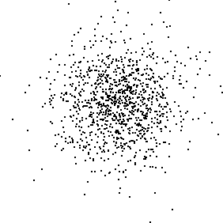

| Brownian motion Y(t) has
independent increments: the
differences |
| To illustrate this visually, we sample a Brownian motion simulation and compute increments |
| We must take the ti so |
| Then we plot the points |
| If the increments are independent of one another, the points should lie in an approximately circular cloud, denser near the center. Here is an example plot. |
|  |
Return to Mathematical Properties of Brownian Motion.